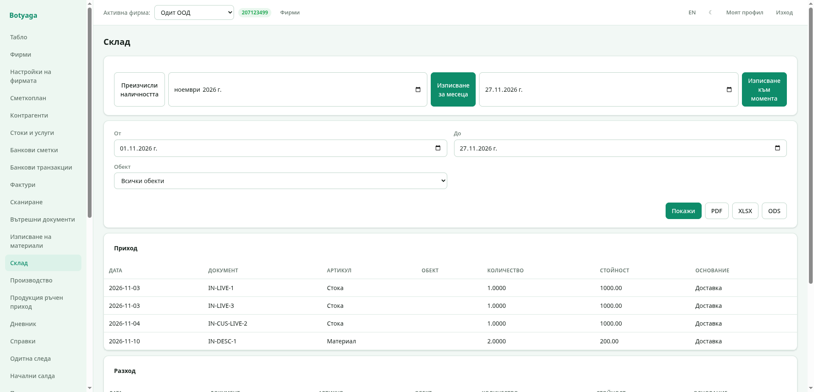
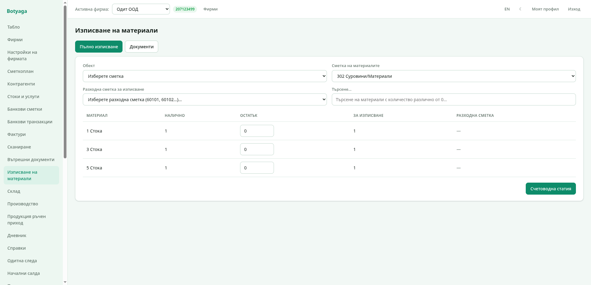

Начало · Склад и материали
Склад и материали
Остатъци, изписване, вътрешни документи.
Складова справка
Наличности по обект: количество и стойност (среднопретеглена/FIFO/LIFO). При плащане се включва банката.
Изписване на материали
Пълно изписване по сметка (302): изберете сметка → всички материали с количество ≠ 0, изберете разходна (60101, 60102…), задайте остатък (0 = цялото количество) и създайте счетоводната статия (Дт разход / Кт сметка).
Вътрешни документи
Трансфер между обекти. Други складови документи се предлагат при нужда.

